Site Touristique
Bienvenue sur GreTisme
GrenobleTourisme
A Propos De Nous
Notre Site vous permets visiter le Grenoble et son alentours SELON vos preferences.

Culturelle

Randonnée

Gastronomie

Soirée

Loisirs
Appuyez sur les blocs pour savoir plus information
Musée de Grenoble

horaires:
lundi: 10-18:30
mardi: ferme
mecredi: 10-18:30
jeudi: 10-18:30
vendredi: 10-18:30
samedi: 10-18:30
dimanche: 10-18:30
Créé en 1798, le musée de Grenoble n’a cessé de s’enrichir pour présenter aujourd’hui aux visiteurs plus de 900 œuvres. Un ensemble unique, tant par ses collections d’art ancien que moderne et contemporain.savoir plus>>
Une visite dans les collections du musée permet de parcourir l’histoire de la peinture occidentale du 13e au 21e siècle, avec, pour chaque période, des œuvres de premier plan : de grands chefs-d’œuvre de la peinture classique flamande, néerlandaise, italienne, espagnole ; l’une des plus riches collections en Europe du 20e siècle ; toutes les grandes tendances de l’art contemporain depuis 1945. S’ajoute enfin à ces œuvres, un fonds d’antiquités égyptiennes étudié et documenté par Champollion, lors de ses séjours à Grenoble.
Adresse: 5 Place de Lavalette, 38000 Grenoble
Consulter le site officielMoucherotte (1901m)
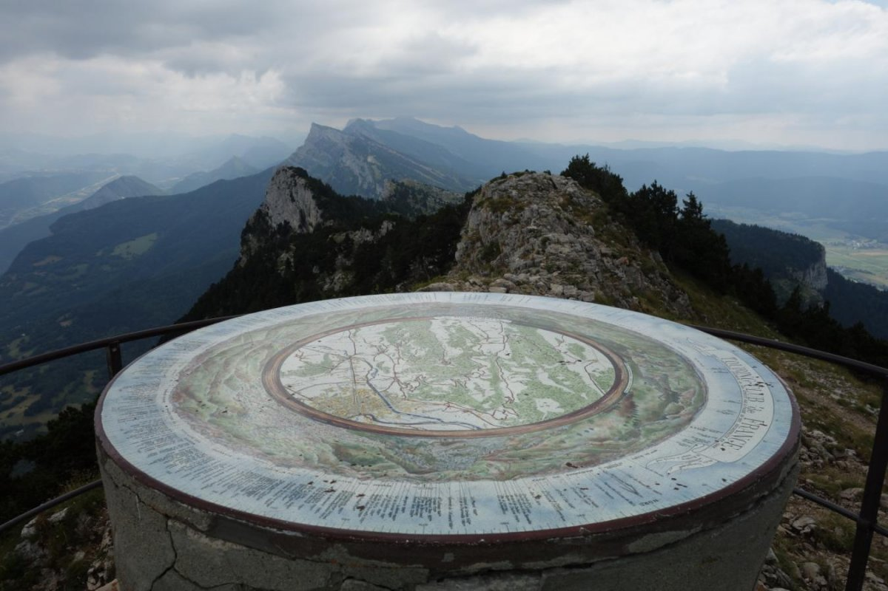1500m
Demi journee

Le Moucherotte est un sommet incontournable car dominant toute la vallée de Grenoble il est un point de repère classique visible de loin et appelle naturellement le randonneur à lui. Il existe plusieurs façons de le gravir mais la plus intéressante et la plus ludique est certainement par la face Est, qui offre des points de vue uniques et des beaux passages aériens où il faut crapahuter avec les mains.
savoir plus>>
• Altitude minimum : 469 m
• Altitude maximum : 1901 m
• Dénivelé cumulé : environ 1500 m
• Distance : environ 12 km
• Horaires : environ 5h (montée : 2h30, descente : 2h30)
• Balisage : jaune/vert partout sauf entre Château Bouvier et
• le sommet dans la face Est : traits/flèches jaunes ou bleu(e)s
Voir le site des randonnees
Acces: De Claix ou Seyssins, prendre la D106d qui monte au-dessus du Fort de Comboire. Cossey est un petit hameau situé au-dessus de cette route. Attention, il n’y a pas de parking et la place de la chapelle est très petite ! Faites au mieux pour vous garer un peu plus loin en bord de route sans gêner les riverains.
Le Fantin Latour
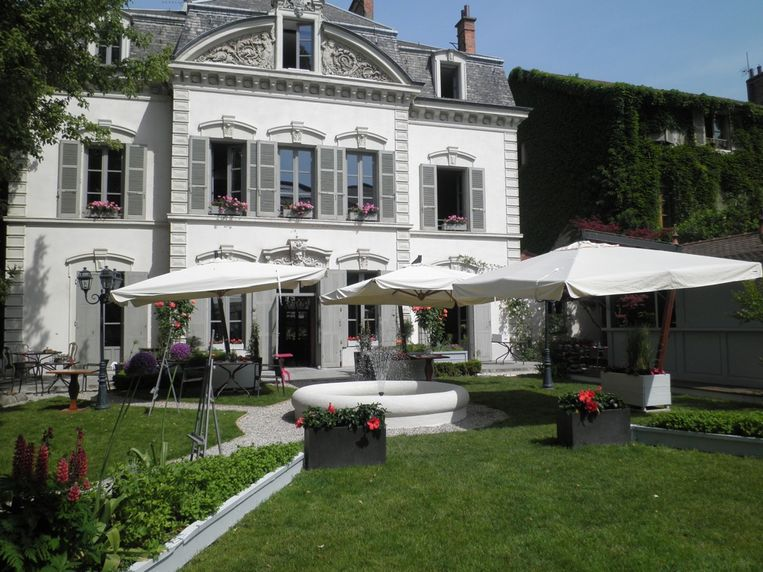 horaires:
lundi: 12-15
mardi: 12-14 19:30-00
mecredi: 12-14 19:30-00
jeudi: 12-14 19:30-00
vendredi: 12-14 19:30-00
samedi: 12-14 19:30-00
dimanche: 13-15
Découvrez un véritable havre de paix en plein cœur de la ville de Grenoble.Logé dans un superbe hôtel particulier environné d'un grand jardin arboré.savoir plus>>
Type de cuisine : Restaurant français. Une décoration contemporaine, chic et épurée. Un grand jardin fleuri, dans lequel picorent un coq et quelques poules, suivies par des lapins, et bientôt des grenouilles ! 2 ruches remplies d'abeilles, et des kilos de miel. Un tilleul 2 fois centenaire. l'établissement vous reçoit pour une pause gastronomique gourmande et raffinée. Accès facile : parking sous-terrain place de Verdun.
Adresse: 1 rue Général de Beylié 38000 Grenoble
Consulter le site officielLa Belle Électrique
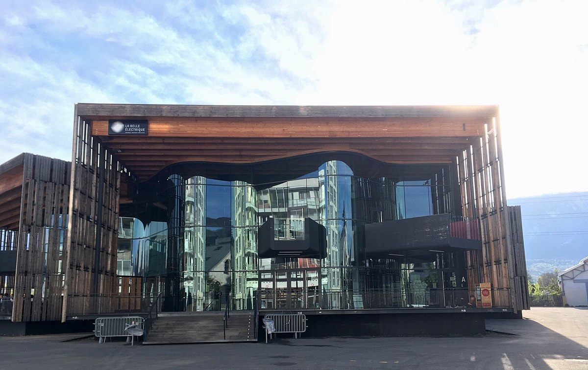 horaires:
lundi: 15:00-01:00
mardi: 15:00-01:00
mecredi: 15:00-01:00
jeudi: 15:00-01:00
vendredi: 15:00-01:00
samedi: 15:00-01:00
dimanche: 15:00-01:00
LE BAR La Belle Électrique c'est aussi un lieu de vie ouvert en journée avec un bar et sa propre programmation ! En temps normal... savoir plus>>
À chaque soir sa programmation ! Afterworks, Dj sets, concerts acoustiques, événements thématiques et retransmission des matchs de foot de la Coupe du Monde dès le 14 juin, retrouvez-vous en famille ou entre amis au bar de la belle du mercredi au vendredi de 15h à 01h et nouveauté, le samedi dès 16h ! Nouveau : Les p'tits dejs à La Belle : 8h/11h du lundi au vendredi, viens déguster ton petit déjeuner à La Belle !
Adresse: 12 Esplanade Andry Farcy 38000 Grenoble
Consulter le site officielPatinoire Polesud
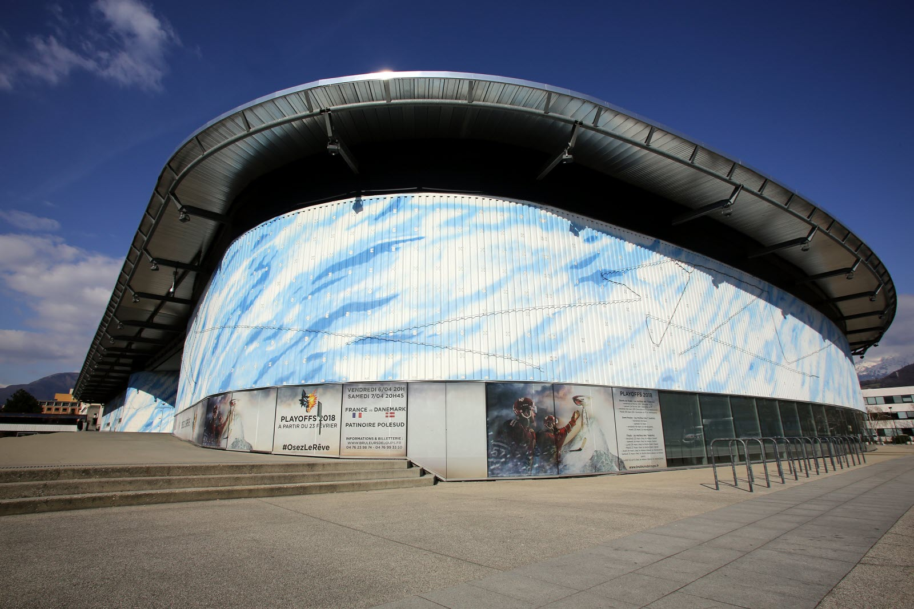 horaires:
lundi: ferme
mardi: ferme
mecredi: 14–17:30 20–23
jeudi: ferme
vendredi: 20:30–23:30
samedi: 10–17:30 20–23
dimanche: 10:00–13:30
La patinoire Polesud est située avenue d'Innsbruck à Grenoble, près d'Alpexpo et de Grand'Place. Elle a été inaugurée le 27 octobre 2001, succédant à la patinoire Clemenceau.savoir plus>>
Pôle Sud, c'est: Deux surfaces de glace d'une superficie de plus de 3 200 m² : La halle sportive (30 m × 60 m) : destinée aux compétitions (hockey sur glace, patinage artistique, short-track). La halle loisirs (26 m × 56 m) : destinée au public. Une capacité d'accueil de spectateurs de 4 208 places. (dont 712 places debout)3,2
Adresse: 1 Avenue d'Innsbruck, 38100 Grenoble
Consulter le site officielMusée Dauphinois

horaires:
lundi: 10-18:00
mardi: ferme
mecredi: 10-18:00
jeudi: 10-18:00
vendredi: 10-18:00
samedi: 10-19:00
dimanche: 10-19:00
Le Musée dauphinois, service du conseil départemental de l'Isère et situé à Grenoble, est un musée ethnographique, archéologique, historique et de société couvrant le territoire de l’ancienne province française du Dauphiné.savoir plus>>
Créé en 1906, il est à l'époque le troisième musée de Grenoble5. Le musée dauphinois va successivement intégrer deux bâtiments historiques du XVIIe siècle, l'ancienne chapelle Sainte-Marie d'en-Bas, puis à partir de 1968, l'ancien monastère Sainte-Marie d'en-Haut, classé monument historique. Ses salles d'expositions temporaires lui permettent d'accueillir chaque année diverses expositions, faisant du lieu un pôle important de la vie culturelle grenobloise. L'une d'entre elles liée à l'Égypte antique, a permis au musée de franchir la barre des cent mille visiteurs en 2004.
Adresse: 30 Rue Maurice Gignoux, 38000 Grenoble
Consulter le site officielCascades du Cirque

500m
3h
Cascades du Cirque de Saint-Même par Saint-Pierre-d’Entremont. Remontée du vallon du Guiers Vif vers les cascades situées juste au-dessous de sa source. Parcours accessible à tous si on ne s’aventure pas dans le Pas Ruat.
savoir plus>>
• Altitude de départ : 640m
• Altitude minimum : 640m
• Altitude maximum : 1050m
• Distance : 11km
• Horaires : environ 3h
• Remarque : l’accès au parking de St-Même permet de visiter les cascades
du cirque de St-Même en s’évitant toute la remontée du vallon. Ce parking est
très fréquenté parfois et a entraîné la mise en place d’un péage et d’une régulation à certaines époques de l’année
Voir le site des randonnees
Acces: Rejoindre St-Pierre-d’Entremont (Isère). Se garer sur le parking devant l’Office de Tourisme (en face de l’église)
La Brasserie Chavant
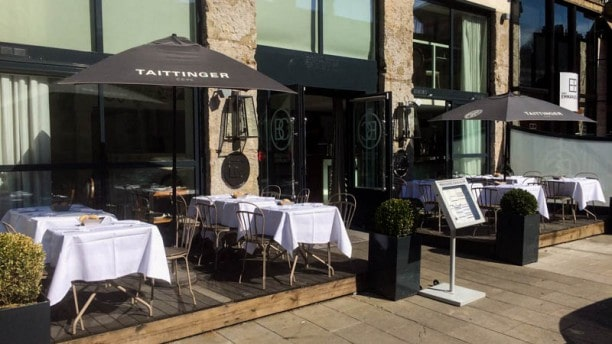 horaires:
lundi: 12-14 19:30-23
mardi: 12-14 19:30-23
mecredi: 12-14 19:30-23
jeudi: 12-14 19:30-23
vendredi: 12-14 19:30-23
samedi: 12-14 19:30-23
dimanche: 12-14 19:30-23
La Brasserie Chavant a été baptisée ainsi en l’honneur de la lignée familiale des Maîtres Cuisiniers du Restaurant Chavant, situé à Bresson depuis 1852.savoir plus>>
Perpétuées initialement de père en fils, les coutumes de la cuisine gastronomique du Restaurant Chavant sont aujourd’hui relayées par le chef Fabien CAPOGNA, collaborateur de l’auberge depuis 2001. La Brasserie Chavant vous suggère un plat du jour ainsi qu’une carte de saison et vous accueille pour vos repas de famille ou d’affaires.
Adresse: 2 Cours Lafontaine 38000 Grenoble
Consulter le site officielBarberousse
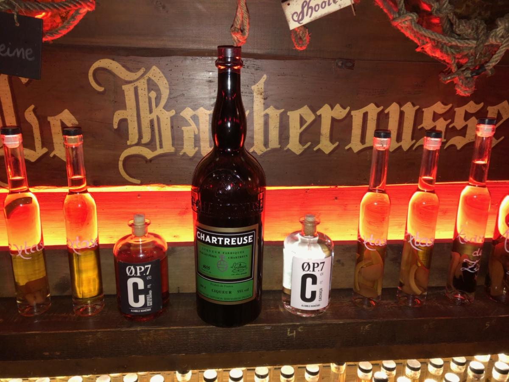 horaires:
lundi: ferme
mardi: 18:00-02:00
mecredi: 18:00-02:00
jeudi: 18:00-02:00
vendredi: 18:00-02:00
samedi: 18:00-02:00
dimanche: ferme
LE BAR Intérieur habillé de bois rappelant un navire pour une soirée festive autour de planteurs et de shooters. savoir plus>>
Un concept de bar unique, ils optent pour un bar à rhum. Le premier bar à shooter Barberousse voit le jour en 1997 à Grenoble, installé dans le quartier des antiquaires, populaire pour son côté festif. Rapidement devenu une référence parmi les bars à thème, un deuxième établissement est inauguré à Montpellier trois ans plus tard. Forts de leur succès, les bars ambiance Barberousse attirent de nombreux entrepreneurs désireux d’ouvrir un bar à thème dans leur ville.
Adresse: 3 Rue Bayard, 38000 Grenoble
Consulter le site officielPathe Cinema
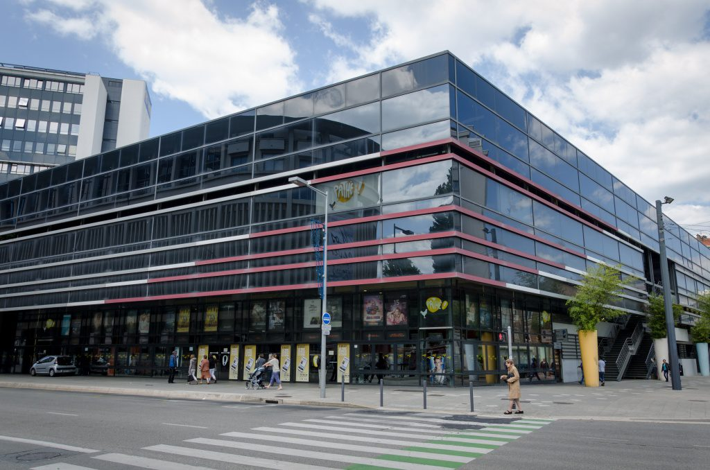 horaires:
lundi: 13:30 - 23:00
mardi: 13:30 - 23:00
mecredi: 13:30 - 23:00
jeudi: 13:30 - 23:00
vendredi: 13:30 - 23:00
samedi: 13:30 - 23:00
dimanche: 13:30 - 23:00
Chaîne de multiplexes avec une programmation de sorties nationales, avant-premières et séances spéciales.savoir plus>>
Situé à proximité du parc Paul Mistral à Grenoble, le cinéma Pathé Chavant vous accueille 365 jours par an pour vivre vos émotions intensément ! Avant ou après votre séance, prolongez votre expérience dans les espaces conviviaux à votre disposition en profitant de notre large offre de confiseries et de boissons.
Adresse: 21 Boulevard Maréchal Lyautey, 38000 Grenoble
Consulter le site officielMusée Archéologique

horaires:
lundi: 9-18:00
mardi: 9-18:00
mecredi: 9-18:00
jeudi: 9-18:00
vendredi: 9-18:00
samedi: 9-18:00
dimanche: ferme
Le musée archéologique Saint-Laurent est un musée départemental situé à Grenoble, en France, au pied de la colline de la Bastille, dans le quartier Saint-Laurent de la rive droite de l'Isère.savoir plus>>
L'ancienne église Saint-Laurent reconstruite sur les vestiges d'une nécropole gallo-romaine a été désacralisée en 1983 pour devenir un site archéologique puis un musée en 1986. Le site est cependant étudié depuis le début du xixe siècle et fait l'objet d’un classement au titre des monuments historiques depuis le 10 août 19772. Il se caractérise par un important empilement d'édifices et de structures, dont le joyau est la crypte Saint-Oyand datant du vie siècle.
Adresse:Place Saint-Laurent, 38000 Grenoble
Bec de l’Orient (1554m)

300m
3h30
Bec de l’Orient (1554m) en boucle par Gève. Itinéraire en boucle le plus court pour accéder au promontoire nord du massif du Vercors. Cette randonnée familiale convient parfaitement aux plus jeunes même si la vigilance est de rigueur lors notamment d'un passage en bordure de falaise.
savoir plus>>
• Altitude de départ : 1289m
• Altitude maximum : 1554m
• Distance : 8km
• Horaires : environ 3:30h
• Remarque: Aucune difficulté. La plus grande partie du temps cette randonnée se déroule
sur des sentiers balisés en sous bois. Par contre la plus grande vigilance s’impose
lors d’un passage en bordure de falaise (très court) à la montée et au sommet
Voir le site des randonnees
Acces: De Grenoble prendre la direction de Villard de Lans par la D 531. Passer Engins et les Gorges du Furon, atteindre le rond-point de Lans-en-Vercors, prendre à droite la direction d’Autrans et de Méaudre. Franchir le Col de la Croix Perrin et descendre jusqu’au village d’Autrans. Suivre ensuite la Route Forestière de Gève. Se garer au bout de la route au parking à 1289m.
Longitude : 5.54°
Latitude : 45.23°
La Belle Électrique
horaires:
lundi: 12:00-15:00
mardi: 12:00-15:00
mecredi: 12:00-15:00
jeudi: 12:00-15:00
vendredi: 12:00-15:00
samedi: 12:00-15:00
dimanche: 12:00-15:00
Devenu un incontournable du quartier Bouchayer Viallet, le restaurant de La Belle Électrique ce sont des propositions à l'ardoise différentes chaque jour avec un plat, un dessert et une suggestion du chef! savoir plus>>
Une pause conviviale et gourmande en salle ou sur la grande terrasse. Des produits frais, locaux et de saison, voilà le concept du restaurant de La Belle Électrique. Avec ses soixante couverts et sa grande terrasse, ce lieu de vie à l'architecture de bois et de verre baigné de lumière est une véritable vitrine sur le quartier Bouchayer Viallet, et le lieu de ressource idéal pour vos pauses déjeuner.
Adresse: 12 Esplanade Andry Farcy 38000 Grenoble
Consulter le site officielLondon Pub
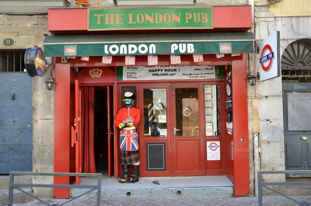 horaires:
lundi: 18:00-02:00
mardi: 18:00-02:00
mecredi: 18:00-02:00
jeudi: 18:00-02:00
vendredi: 18:00-02:00
samedi: 18:00-02:00
dimanche: ferme
Seul ou avec d'autres personnes, le pub londonien est l'endroit où vous pouvez être sur pour rencontrer vos meilleurs amis du monde entier! Bar d'ambiance, ERASMUS! savoir plus>>
Ce bar convivial propose des soirées à thème et une carte classique dans un cadre chaleureux aux murs rouges.
Adresse: 11 Rue Brocherie, 38000 Grenoble
Consulter le site officielLaser Game
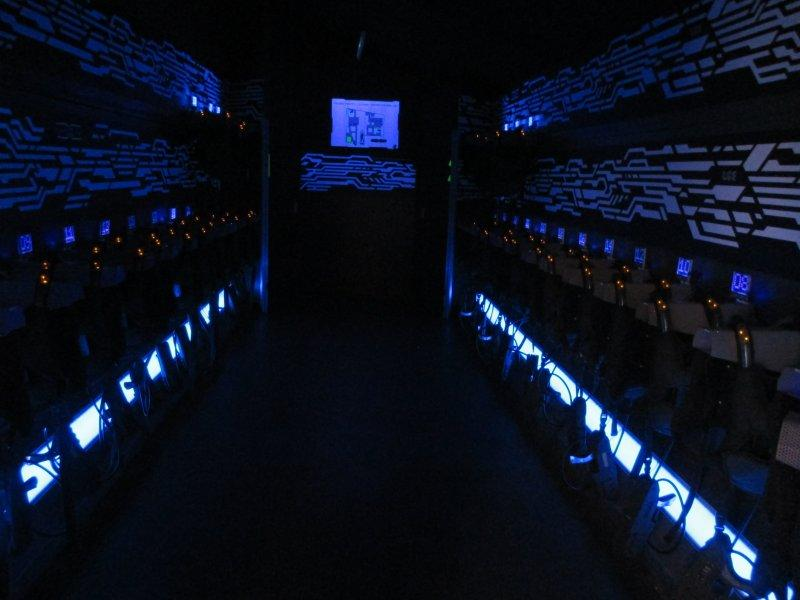 horaires:
lundi: ferme
mardi: ferme
mecredi: 18:00–22:00
jeudi: 18:00–22:00
vendredi: 18:00–22:00
samedi: 18:00–22:00
dimanche: 18:00–22:00
Un jeu laser aussi connu sous le nom de marque Laser Force ou Laser Game Évolution sous l'appellation générique Laser tag est une activité physique où les participants.savoir plus>>
23 ans après sa création et grâce à ses plus de 4 millions de joueurs par an, Laser Game Evolution devient LA référence loisir en remportant le prix Capital de La Meilleure Enseigne 2018 et 2019 !
Adresse: 14 Rue Colonel Dumont, 38000 Grenoble
Consulter le site officielFort du Saint Eynard

horaires:
lundi: ferme
mardi: 11-17:00
mecredi: 11-17:00
jeudi: 11-17:00
vendredi: 11-17:00
samedi: 11-17:00
dimanche: 11-17:00
Le fort du Saint-Eynard, ou fort Seras, est une fortification faisant partie de la place forte de Grenoble, situé au sud-sud-ouest de la commune du Sappey-en-Chartreuse, se situant à 1 325 mètres d'altitude. Il est l'un des sept forts constituant la ceinture fortifiée de Grenoble.savoir plus>>
Il est accessible à pied et en voiture (route fermée en hiver), et abrite aujourd'hui un restaurant et un musée, ouverts l'été. Supervisé par Richard de Régnauld de Lannoy de Bissy, le fort du Saint-Eynard a été construit entre le 21 mars 1873 et octobre 1879, selon le système de défense préconisé par le Général Séré de Rivières et suivant le projet local du colonel Mamès Cosseron de Villenoisy qui lui succède à la Direction nationale du Génie.
Adresse: 38700 Le Sappey-en-Chartreuse
Grande Moucherolle

1150m
8h
Traversée de la Grande Moucherolle (2284m). Quelques passages aériens, couloir raide et vire du pas de la Balme, vous garderez un bon souvenir de cette magnifique traversée des Moucherolle.
savoir plus>>
• Altitude de départ : 1021m
• Altitude maximum : 2284m
• Horaires : environ 8h
• Remarque: Aucune difficulté jusqu’au Refuge du Col de l’Arzelier et au delà. La difficulté, on la trouve dans le couloir raide du Col
des Deux Sœurs, les chutes de pierres sont fréquentes. Un passage demande de l’attention, muni d’un vieux câble qui rassure.
• La descente du Pas de la Balme se réalise sur une vire assez large, au-dessus de barres rocheuses.
Voir le site des randonnees
Acces: • Départ de la randonnée, du Col de l’Arzelier sur la commune de Château-Bernard. • À la sortie de Vif en direction de Monestier-de-Clermont prendre à droite la D.8 jusqu’à St-Barthélemy. Puis à droite la D8b jusqu’au col de l’Arzelier. Peu après ce col, prendre la petite route à droite et aller vous garer plus loin sur le parking à la cote 1201 sur ign.
Longitude : 5.56°
Latitude : 45°
Fromagerie Les Alpages
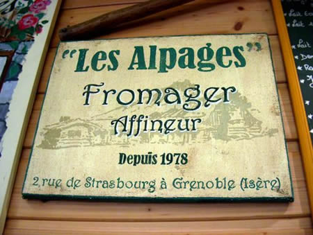 horaires:
lundi: ferme
mardi: 6:00-19:30
mecredi: 6:00-19:30
jeudi: 6:00-19:30
vendredi: 6:00-19:30
samedi: 6:00-19:30
dimanche: ferme
Cette fromagerie vend des spécialités de montagne à la coupe ou en plateau ainsi que des vins assortis.savoir plus>>
La Fromagerie Les Alpages est établie à Grenoble depuis plus de 30 ans. Tenue par Bernard Mure-Ravaud : Meilleur Ouvrier de France et Champion du Monde des fromagers en 2007. La boutique vous propose plus de 150 variétés de fromages : des produits rares comme le Bleu de Termignon (produit par moins de 6 fermiers) ou le Beaufort d’Alpage (produit 100 jours par an, à plus de 1500m d’altitude) aux originales raclettes 7 fromages, Brillat Savarin à la truffe… Vous retrouverez aussi une sélection de vin et charcuterie et laitages de petites exploitations fermières.
Adresse:4 Rue de Strasbourg, 38000 Grenoble
Consulter le site officielLe Phoenix
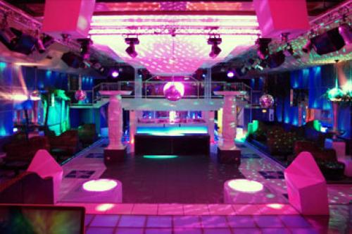 horaires:
lundi: ferme
mardi: ferme
mecredi: ferme
jeudi: 18:00-02:00
vendredi: 18:00-02:00
samedi: 18:00-02:00
dimanche: ferme
Boite de nuit qui vous propose plein de soirée tematique, intérieur spacieux et épuré pour cette boîte de nuit ultramoderne organisant des soirées étudiantes. savoir plus>>
Une grande et belle discothèque, sans doute le plus beau décor de la métropole grenobloise, située en périphérie immédiate de la ville, proche des grands centres commerciaux. Une ambiance jeune, souvent étudiante, et plutôt sage sur ses deux étages où l’on peut écouter un peu tous les styles de musique, surtout du gros son, avec de la techno ou du r’n’b de grande qualité. Des shows et des soirées thématiques au fil des saisons. Une boîte up to date qui a de l’allure !
Adresse:3B Allée des Centaurées, 38240 Meylan
Consulter le site officielBowlCenter
horaires:
lundi: ferme
mardi: ferme
mecredi: ferme
jeudi: ferme
vendredi: 14:00–03:00
samedi: 14:00–03:00
dimanche: 14:00–03:00
BowlCenter Echirolles c'est Bar, billard et crêperie chaleureuse dans un bowling de 32 pistes aux équipements modernes, avec soirées DJ.savoir plus>>
Les 32 pistes du BowlCenter d’Échirolles vous attendent pour venir passer un agréable moment entre famille ou entre amis. Avec 32 pistes de bowling et un équipement haut de gamme fluorescent AMF, la qualité de jeu est optimale et l’ambiance garantie.
Adresse: 19 Avenue de Grugliasco, 38130 Échirolles
Consulter le site officielChâteau de Vizille

horaires:
lundi: 10-18:00
mardi: ferme
mecredi: 10-18:00
jeudi: 10-18:00
vendredi: 10-18:00
samedi: 10-18:00
dimanche: 10-18:00
Le musée de la Révolution française est un musée situé à Vizille en France et géré par le département de l'Isère. Inauguré le 13 juillet 1984 dans la perspective des commémorations du bicentenaire de la Révolution.savoir plus>>
Il est hébergé dans le château où s'est tenue la réunion des états généraux du Dauphiné le 21 juillet 1788 et reste le seul musée au monde entièrement consacré à la période de la Révolution française. Parmi ses pièces les plus célèbres figurent La République française de Jean-Baptiste Wicar, première représentation connue de la République française, Le peintre David dessinant Marie-Antoinette conduite au supplice de Van den Bussche, ou encore Capet lève toi ! d'Émile Mascré.
Adresse: Place du Château, 38220 Vizille
Tour du Mont Aiguille

1000m
6h
Tour du Mont Aiguille (1720m). Belle randonnée en boucle autour du Mont inaccessible. Sans difficulté majeure quoiqu’un peu longue. Si vous ne devez en faire qu'une seule dans le Trièves, choisissez celle-ci sans hésiter. Cette boucle, traverse de beaux hameaux, comme celui de Trézanne, qui regarde la face nord du Mont Aiguille, et celui, plus paisible, des Pellas qui fait face au point culminant du Vercors : le Grand Veymont.
savoir plus>>
• Altitude de départ : 1022m
• Altitude maximum : 1720m
• Horaires : environ 17km
• La difficulté pourrait venir de la longueur du parcours pour certaines personnes.
Voir le site des randonnees
Acces: • Départ de la randonnée, du hameau La Richardière. • A Monestier-de-Clermont en venant de Grenoble, continuer sur la RN 1075 en direction du Col de la Croix-Haute. A hauteur de Clelles, prendre à droite la D 7 en direction de Châtillon-en-Diois et du Col de Menée. Prendre 2,4 km plus loin, à droite, la D 7b pour la direction de Richardière pour s’y garer.
Longitude : 5.58°
Latitude : 44.84°
A confesse
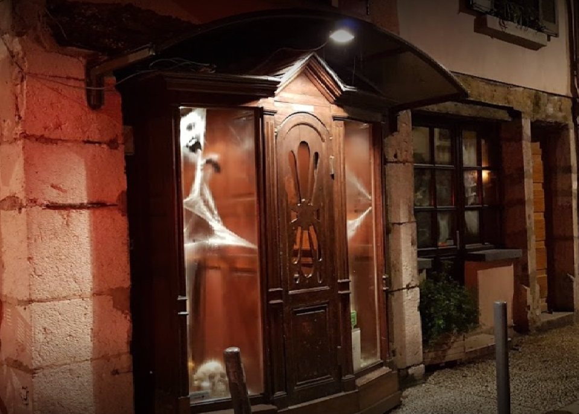 horaires:
lundi: 19-00:00
mardi: ferme
mecredi: 19-00:00
jeudi: 19-00:00
vendredi: 19-00:00
samedi: 19-00:00
dimanche: 12-14 19-00:00
Des crêpes d'enfer et des fondues du diable, rue st Laurent grenoble. Crypte st Laurent savoir plus>>
Le décor et la carte vous invitent à un parcours initiatique de l’ésotérisme et du symbolisme. Les crêpes d’enfer et les fondues du diable (+ de 20 variétés) vont enflammer vos papilles. Un accueil chaleureux et convivial depuis 1975.
Adresse: 27 Rue Saint-Laurent, 38000 Grenoble
Consulter le site officielVieux Manoir
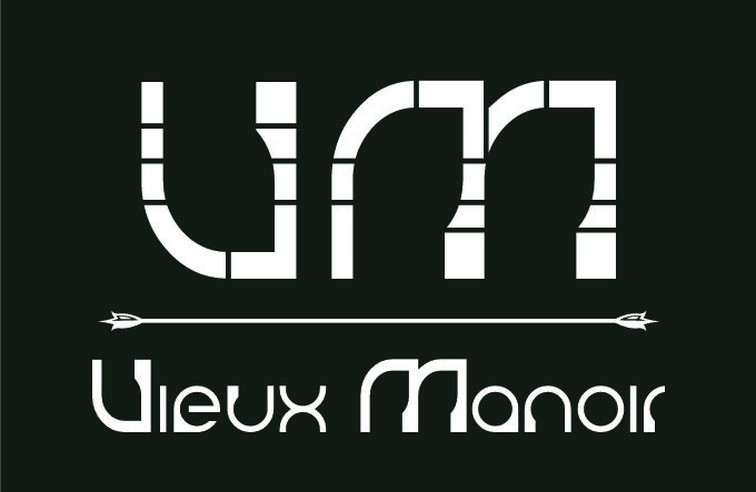 horaires:
lundi: ferme
mardi: ferme
mecredi: ferme
jeudi: 23:50-07:00
vendredi: 23:50-07:00
samedi: 23:50-07:00
dimanche: ferme
Loisirs récréatifs, Discothèque Unique au centre-ville, le complexe du Vieux Manoir se distingue par ses quatre ambiances bien différentes. Le Club et son danceflorr lumineux (Electro), L'Arkange Pub (Pop Rock). L'Entresol (Disco) et enfin l'Ave Maria (+25 ans). savoir plus>>
Généraliste & Latino Entrée gratuite sur l’ensemble du complexe excepté au club. Chaque jeudi, entrée gratuite & tarifs étudiants toute la nuit !"
Adresse:50 Rue Saint-Laurent, 38100 Grenoble
Consulter le site officielAccrobranche
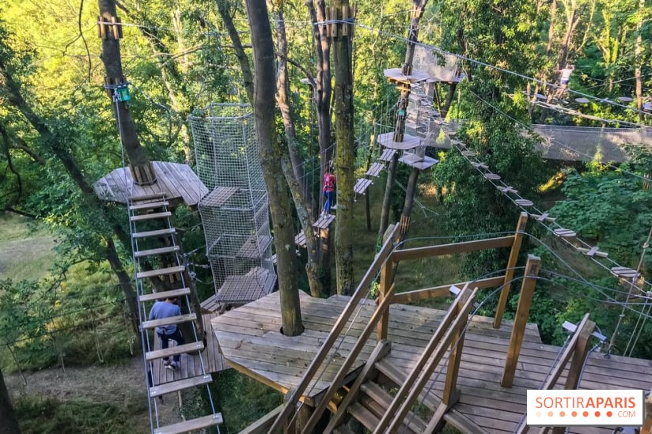 horaires:
lundi: 13:00-19:00
mardi: 13:00-19:00
mecredi: 13:00-19:00
jeudi: 13:00-19:00
vendredi: 13:00-19:00
samedi: 13:00-19:00
dimanche: 13:00-19:00
Alté Chamrousse Aventures vous propose 90 ateliers dans les arbres dès 4 ans. Venez découvrir des parcours adaptés à tous les âges et tous les niveaux. Vous pourrez ainsi partager une aventure en famille ou entre amis.savoir plus>>
Parc aventures est ouvert tous les jours du 27 Juin au 30 Août 2020 et reste ouvert toute l'année pour les groupes sur réservation. Tous nos parcours sont équipés du système de ligne de vie continue qui permet d’évoluer d’arbre en arbre en toute sécurité !
Adresse: 495 Route de Bachat Bouloud - Chamrouse 1700, 38410 Chamrousse
Consulter le site officiel